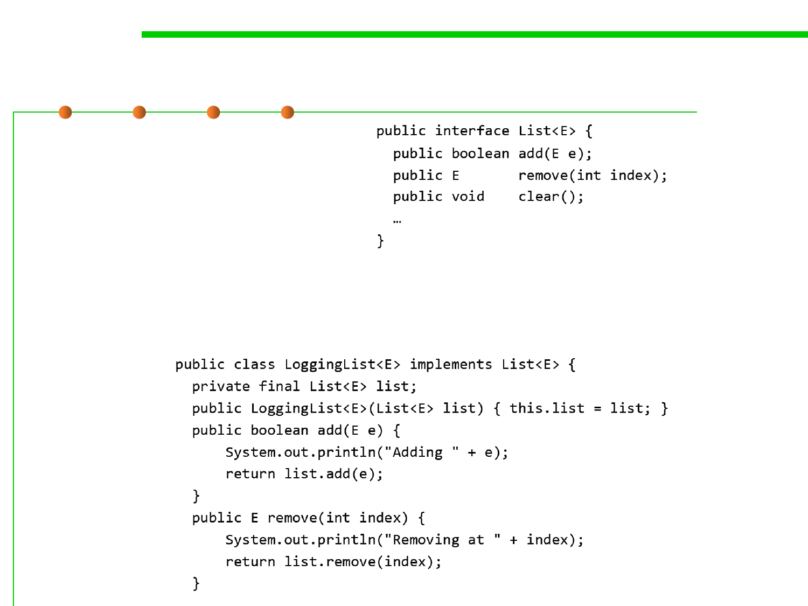

5.2 Construction for Reuse
Using delegation to extend functionality
▪ Consider java.util.List
▪ Suppose we want a list that logs its operations to the console…
– The LoggingList is composed of a List, and delegates (the non-logging)
functionality to that List.